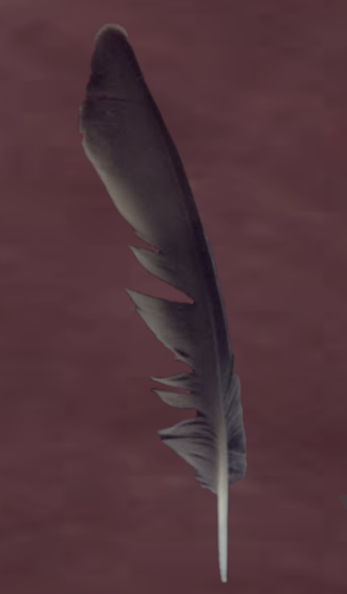

Pigeon Feather
Scientific Name:
Columbidae
Fun Facts:
The domestic pigeon is a pigeon subspecies that was derived from the rock dove (also called the rock pigeon).
Pigeons have been domesticated for several years, even centuries.
Pigeons have been also been trained to do several things, pigeons mainly being used during midieval times.
Pigeons have made contributions of considerable importance to humanity, especially in times of war.
In war, the homing ability of pigeons has been put to use by making them messengers.
So-called "war pigeons" have carried many vital messages, and some have been decorated for their services.
Medals such as the Croix de Guerre, awarded to Cher Ami.
The Dickin Medal awarded to the pigeons G.I. Joe and Paddy, amongst 32 others, have been awarded to pigeons for their services in saving human lives.